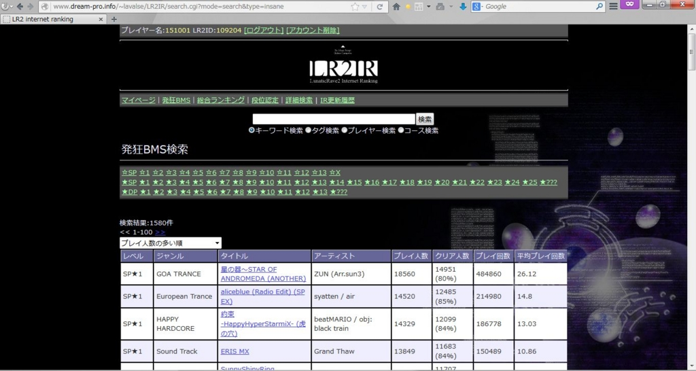
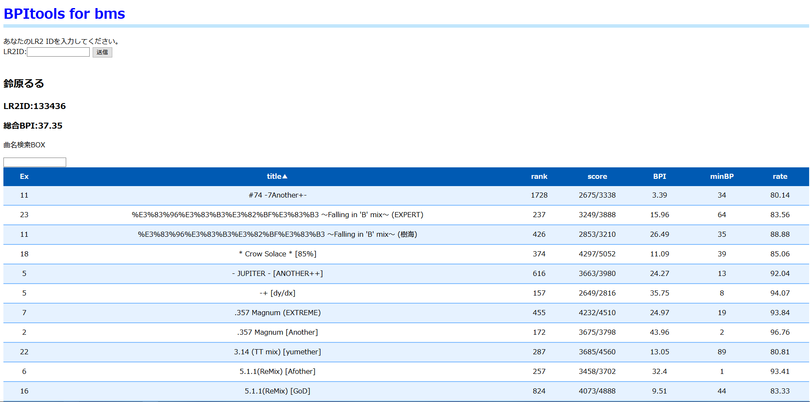

PC音楽ゲーム BMS
Links
LR2 internet ranking

現在主流のBMSプレイヤー「LR2」のinternet rankingサイト
現在閉鎖されているLR2公式ホームページに代わりLR2本体の配布も行っている
BPI for BMS

norimiso氏考案のBPI(Beat Power indicator)のBMS版
IIDX版に比べデータ数が多い為より正確な値となっている